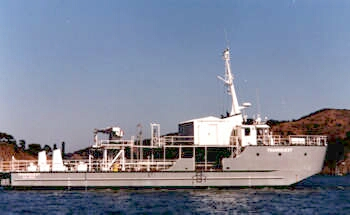
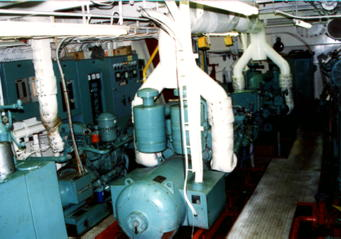

Specifications for the Research Vessel Transquest


199 tons
108' Length
39' Beam
6' Draft
Twin (2) 8V71 Mains
(2) 12V71 250KW Gens
(1) 3/71 30 KW 440/3
Bow Thruster
150 GPM Hydraulic Unit
Sperry Gyro Auto Pilot
64 Mi and 24 Mi Radar
High Pressure Air
2700 Gal Fresh Water
50 gph watermaker
10,000 fuel
100,000 extra ballast storage
Berthing for 15
Full Galley
50 ton 35x25 Elevator
7.5 ton Deck Crane
6800lb. Salvage Winch
260 sq.ft lab VAN (locked office space)

Auxiliary Machine Room

Back to the Transquest Home Page
Web site developed by Sarah Rodger, Transquest Crew